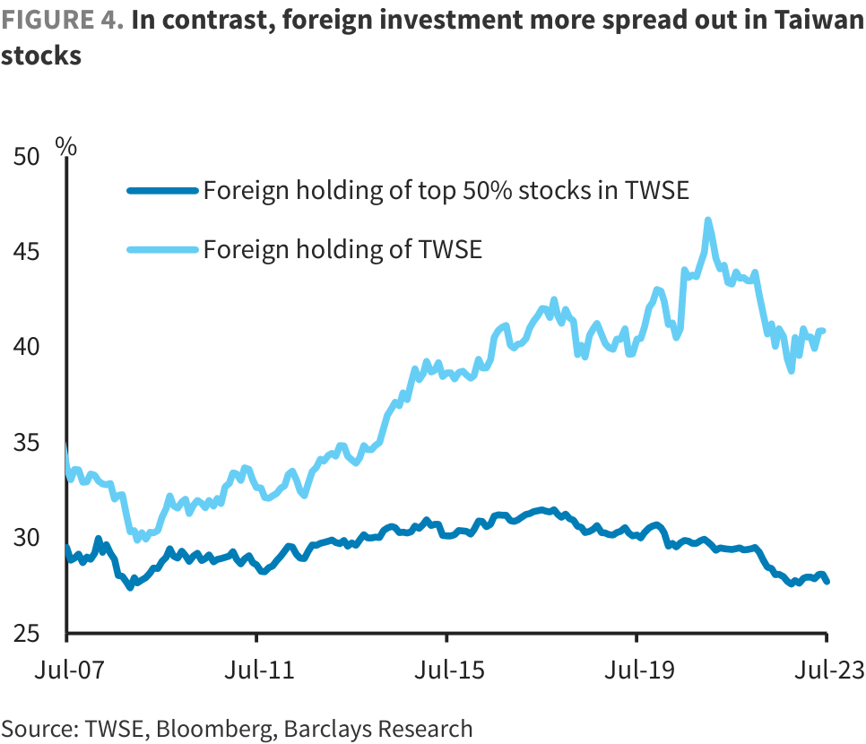

FX Insights KRW: Lingering weakness to lift USDKRW
We continue to look for a higher USDKRW, but now expect KRW outperformance over TWD to reverse in the near term. Risk sentiment, equity weakness, higher US rates and Korea's stalling trade recovery are likely to weigh on KRW. We expect a rebound in KRW against USD when the semiconductor cycle bottoms, likely in Q4.
We see some overshoot in USDKRW beyond our Q3 target (1340) and recommend long USDKRW 1m NDFs (entry: 1315, target: 1365, stop-loss: 1290). A few factors have aligned to support a higher USDKRW in the near term: rising risk aversion in equity markets, increasing term premium lifting US rates, and heightened uncertainty around the trade recovery.
By contrast, dividend repatriation pressures have eased on the TWD, with less than 20% of announced dividends left to be paid out in the next month ( Figure 1 ). As the implied KRW outperformance over TWD that we have been highlighting since March has completed its run, we expect a higher TWDKRW in the next month.
We turned cautious on KRW and TWD in mid June as both currencies are at a disadvantage as low-yielders in a higher-for-longer US rates environment ( KRW & TWD: no longer in lockstep with CNY ). Since mid June, the TWD (-3.5% vs USD) and KRW (-3.4%) have been the worst FX performers in Asia. Now that the buffer both currencies have enjoyed from tech stocks rally and equity inflows has also diminished in the past month, the laggard KRW in the recent risk-off episode screens as being vulnerable.
How far USDKRW can move up is dependent on the BoK, in our view. We believe the BoK stepped into support the KRW when USDKRW traded above 1340 in late April/ May. The bank sold USD2.1bn of its FX reserves in Q1 to cap volatility in the KRW, and we expect more dollar sales took place in Q2 (data to be announced by end-September). The DXY is currently trading close to levels seen in that episode, but the price of WTI crude oil has risen 6% and the 10y UST yield surged ~60bp since end-April. We think official defence of the KRW would become more visible if USDKRW tests 1340, as the BoK's FX reserves and forward book have yet to expand materially ( Figure 6 ).
====================================================================================================
Note: 12-month rolling correlations. Our Risk Aversion Indicator (RAI) separates out the market shifts that are linked to cyclical forces versus the ones linked to sentiment. For details, please refer to US downgrade hits sentiment: We introduce our Risk Aversion Indicator.
We see a few headwinds emerging against the KRW: weakening risk sentiment, term premium-driven UST sell-off, and heightened uncertainty around the trade recovery . Historical FX performance analysis using our proprietary risk aversion index (RAI) suggests the KRW is the best performer in EM Asia when the RAI is in the 'medium' region and underperforms EM currencies when the RAI rises to extreme risk aversion. Interestingly, KRW also records losses against USD in the extreme risk scenario. Hence, a contained pullback in the RAI should ultimately offer an opportunity to re-engage in carry trades, in our view. But before that, we expect KRW to depreciate given its high-beta to equity flows.
Equity inflows driven by the positive impulse of the AI theme in May have started to reverse for both Korean and Taiwan stock markets, on the back of higher US rates and equity corrections. Foreign investors have sold USD180mn of Korean stocks in the quarter-to-date, after USD2.5bn of inflows in Q2 and USD5.5bn in Q1. Foreign selling of Taiwan stocks have amounted to USD4bn QTD, narrowing the YTD total inflows to just USD7.3bn.
That said, we think the medium-term trend of foreign equity flows still favours Korea over Taiwan, given the relatively lower foreign ownership of the KOSPI and higher geopolitical risk premia for Taiwan. Foreign ownership of the KOSPI is 27.6% of the market, of which around 20ppt is concentrated in the top 13 stocks, which have an aggregate index weight ~50% ( Figure 3 ). In contrast, foreign investor holdings of TWSE stocks are more widespread, with only 28ppt out of total ownership of 40.9% invested in the top 18 stocks (aggregate index weight ~50%) ( Figure 4 ). Allocations to stocks with smaller index weights also tend to be more volatile: standard deviations of foreign holdings beyond the top 18 stocks in the TWSE is greater than that in KOSPI, based on data since August 2021. This may suggest these flows are more subject to other factors like risk sentiment and geopolitical noise.
FIGURE 1. Pressure from dividend payout outflows on TWD has eased
FIGURE 2. KRW and TWD correlations with risk appetite have broken

====================================================================================================
stocks
Furthermore, the recovery in the Korea trade surplus is happening at a slower pace than we expected , due to: 1) a bumpier path for the semiconductor cycle to bottom out; and 2) higher oil prices . July exports came in softer than expected, with a notable underperformance of autos and ship exports, leading to a small trade surplus. A silver lining here is the return of the export orders PMI to expansion (50.2, up +3.2pts) for the first time since February 2022. Firms have also upped their hiring in response to increased orders, leading to additional capacity that is helping to clear order backlogs. We continue to believe that a material rebound in the KRW will occur only after the semiconductor cycle has bottomed, which we think is likely in Q4 this year.
Higher energy bills are also adding pressure on Korea's current account position (CA). The WTI crude oil price (USD81/bbl) has risen over 19% since June. Our commodity analysts forecast the price to rise to USD91/bbl by end-Q3, before consolidating around USD88/bbl by year-end . We estimate that every USD10/bbl increase in oil prices reduces Korea's CA surplus by ~USD9.1bn .
FIGURE 3. Foreign investors have concentrated their allocations to Korean stocks with heavy index weights
FIGURE 4. In contrast, foreign investment more spread out in Taiwan
FIGURE 5. Bumpy road for Korea's trade recovery
FIGURE 6. BoK FX reserves still relatively low
====================================================================================================